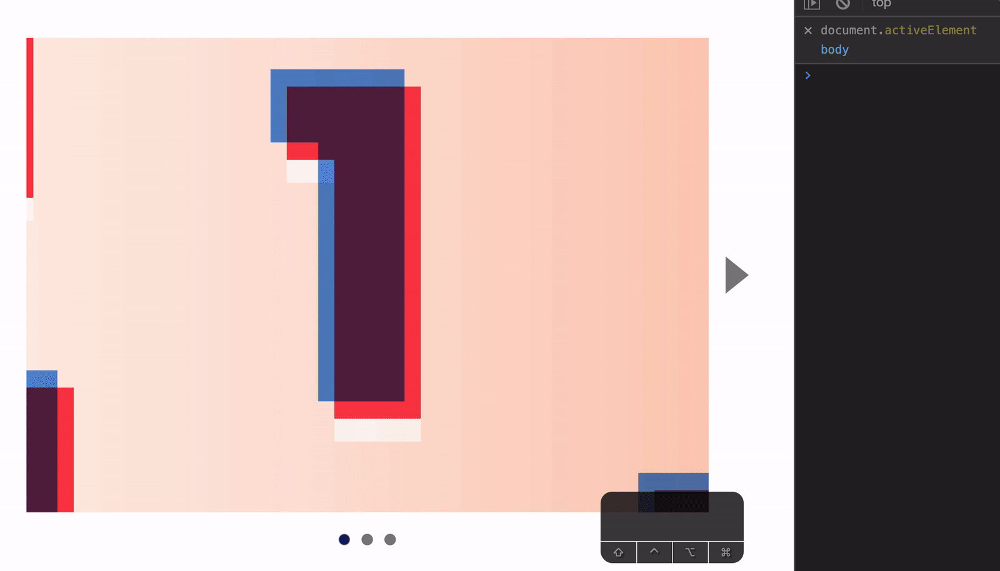
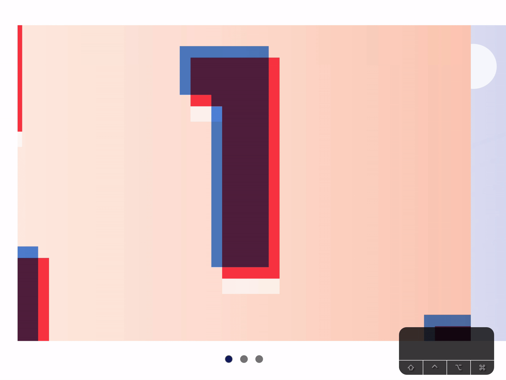
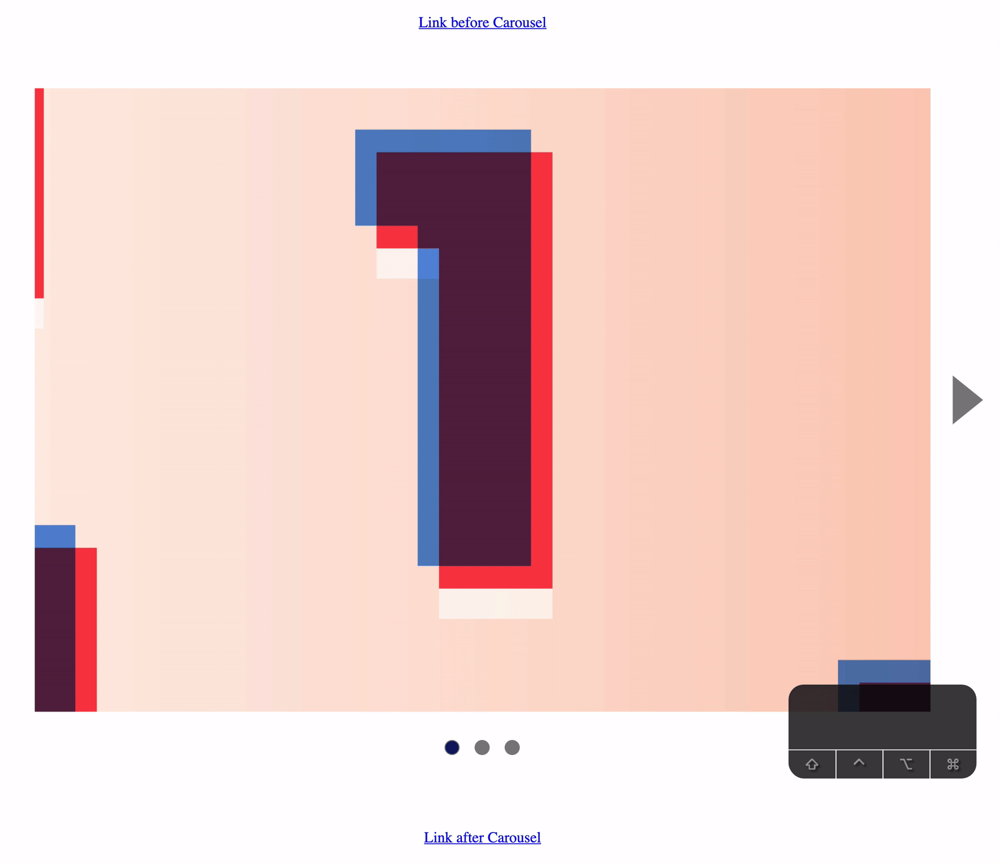
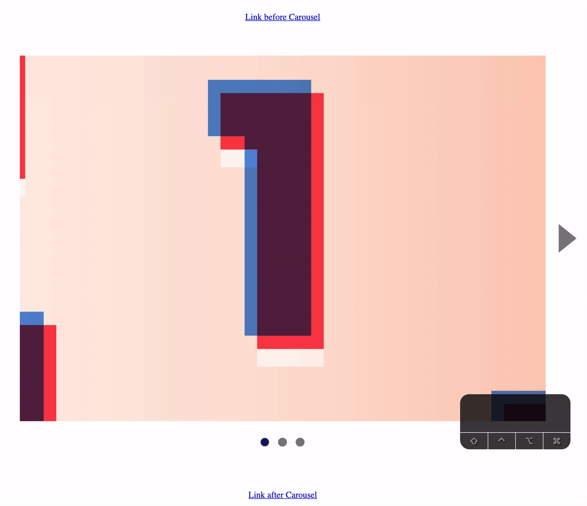
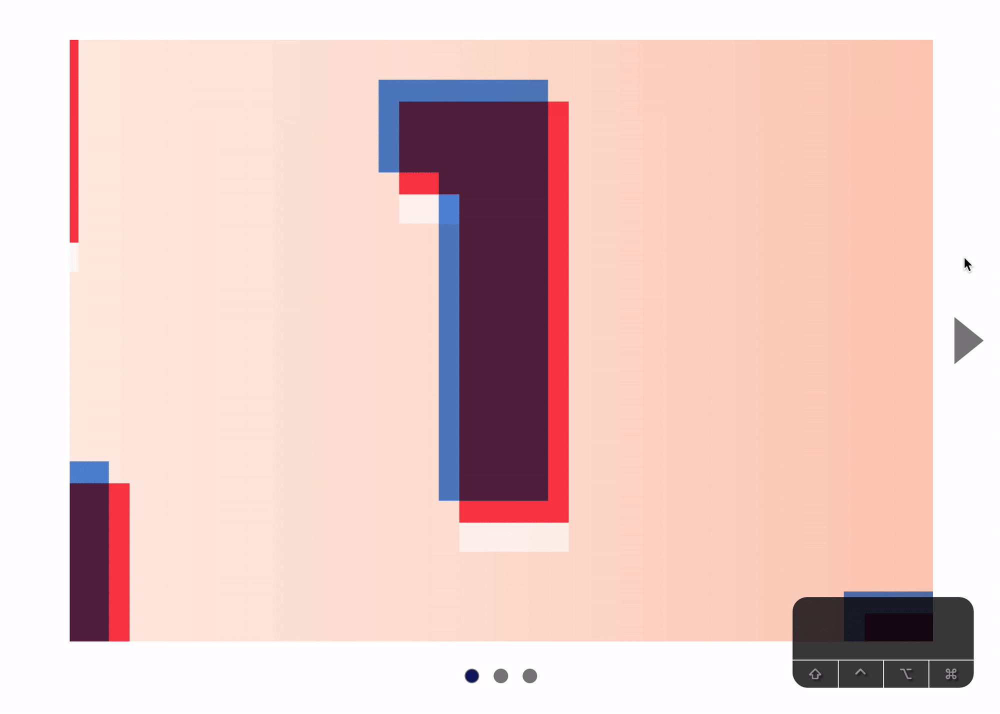
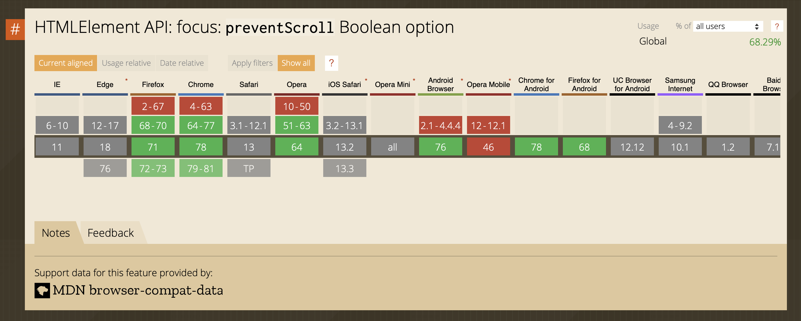

Users can Tab through every element of the carousel. By this definition, our carousel is already keyboard accessible.

Even though users can Tab through a carousel, they won’t know it unless they see a focus style.
Showing a focus style
Each slide has a focus style. We don’t see the focus because the focus got hidden by overflow: hidden.
/* This is the culprit */
.carousel__contents-container {
overflow: hidden;
}
We can see the focus if we removed overflow: hidden from .carousel__contents-container.

However, we cannot remove overflow: hidden from .carousel__contents-container. That’s the property we used to hide other slides. We need overflow: hidden to remain.
We need another way to show focus on each slide. There are two choices:
Use an inset box shadow on each focused slide
Add a box shadow to .carousel__contents-container when children elements get focus
Both methods work. We’ll go with the second one because the focus looks way better when we change slides.
We can detect when children element gets focus with :focus-within. We’ll use this pseudo-class to display the focus.
Imagine using a website with this carousel. You need to get past the carousel with a keyboard. To get past the carousel, you need to hit Tab 9 times.
This is a frustrating experience. (And the frustration increases with the number of slides).
It takes 9 tabs to get through a carousel with 3 slides
The best way to allow users to move past the carousel is to remove the ability to Tab through all slides, buttons, and dots. If we do this, users can get through the carousel in 2 Tabs.

To do this, we have to set tabindex to -1 for the previous and next buttons.
We destroyed keyboard accessibility when we prevent users from Tabbing into the slides. We need to provide users an alternate way to access the slides.
The best way is to let them switch slides with arrow keys. They can:
Go to the next slide with →
Go to the previous slide with ←
First, we need to listen for arrow keys.
The best way to listen for arrow keys normally is to add the event listeners on focusable elements (the <a> tags for the carousel).
But, in this case, we can use the event delegation pattern on a parent element like .carousel__contents.
We can do this because each <a> tag covers the same area as .carousel__contents. Users will not be able to click on a space between <a> and .carousel__contents.
Users should be able to interact with each slide. If they press Enter when the second slide is shown, they should navigate to the link the second slide points to.
Let’s add real links to each slide to test this out.
Try going to the third slide with →. Press Enter when you get to the third slide. You’ll notice you get directed to the first slide’s link.
This is wrong. You should get directed to the third slide’s link.
This happens because we only changed the slides visually. Focus still remains on the first slide’s <a> element.
For keyboard accessibility to work properly, we need to focus on the correct slide’s <a> too.
nextButton.addEventListener('click', event => {
// ...
// Focus on selected slide's anchor tag
const link = slides[nextSlideIndex].querySelector('a')
link.focus()
})
Unfortunately, the carousel breaks after adding the focus method.
Try clicking the right button (or hitting → once). You should see the second slide. But you’ll see the third slide.

This happens because the focus method forces the browser to scroll to the focused element (both vertically and horizontally).
We can prevent automatic scrolling by setting preventScroll to true.
nextButton.addEventListener('click', event => {
// ...
// Focus on selected slide's anchor tag
const link = slides[nextSlideIndex].querySelector('a')
link.focus({ preventScroll: true })
})
Remember to add the focus code to previousButton's and dotsContainer's event listeners as well.
previousButton.addEventListener('click', event => {
// ...
// Focus on selected slide's anchor tag
const link = slides[previousSlideIndex].querySelector('a')
link.focus({ preventScroll: true })
})
dotsContainer.addEventListener('click', event => {
// ...
// Focus on selected slide's anchor tag
const link = slides[targetSlideIndex].querySelector('a')
link.focus({ preventScroll: true })
})
Unfortunately, preventScroll is not supported on Safari and Edge yet.

We need a fallback.
Fallback for preventScroll
When the browsers scrolls to the focused element, they’ll scroll the nearest scrollable ancestor element. In this case, the scrollable element is .contents__track-container.
You can detect the scroll by adding a transitionend event listener.
We want to prevent this scrolling behavior from happening. To do this, we need to set .contents__track-container scroll back to 0 before the transition happens.
We need to use a setTimeout callback to do this.
nextButton.addEventListener('click', event => {
// ...
const link = slides[nextSlideIndex].querySelector('a')
link.focus({ preventScroll: true })
// Fallback for preventScroll
setTimeout(() => {
contents.parentElement.scrollLeft = 0
}, 0)
})
// Repeat fallback for previousButton and dotContainer event listeners
Safari and Edge should work fine now.
Subsequent focus
Let’s say a user Tabs out of the carousel from the second slide. A while later, the Tab back into the carousel. When they do this, we want focus to be on the second slide.
We can do this by swapping the tabindex values when we change slides.